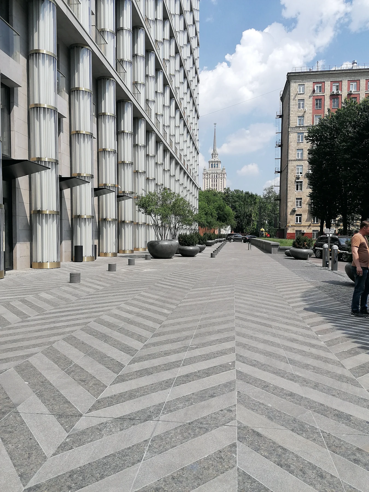
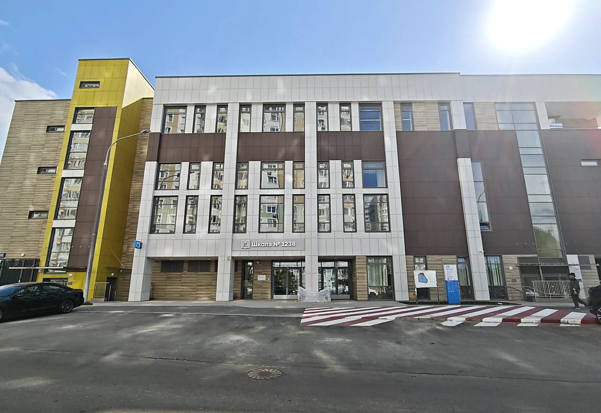

ЖК «Микрогород в Лесу»
110 000 м², 980 квартир, 16 секций, трёхуровневый подземный паркинг. Подробнее
Избранные проекты
Объекты культурного наследия, премиальная жилая застройка, социальные, медицинские и инженерные объекты. В каждом случае работа шла на стыке технической, организационной и документальной частей проекта.
Объект культурного наследия
Техническое и финансовое сопровождение строительно-реставрационных работ: договоры, сметы, исполнительная документация, согласования и надзор.

Клубный дом
Внутренние инженерные системы, электроснабжение, слаботочные системы, автоматика, проектные изменения и документация.

Медицинский объект
Новый корпус: отопление, теплоснабжение, ИТП, пусконаладка, исполнительная документация и сдача.

Социальный объект · 2026
Формирование команды, календарного и финансового планов, подготовка к приёмке и вводу в эксплуатацию.

Инженерная инфраструктура
Водоснабжение, хозяйственно-бытовая и ливневая канализация, ЛОС, КНС, согласование проектных решений и ввод.
Другие направления опыта
Дополнительные проекты подтверждают масштаб управленческого, технического и документального опыта.
110 000 м², 980 квартир, 16 секций, трёхуровневый подземный паркинг. Подробнее
Организация работ одновременно на 21 объекте в программе комплексного ремонта.
Теплоснабжение, отопление, электроснабжение, слаботочные системы, автоматика и эксплуатационная готовность.
Опишите объект и ситуацию. Важно не количество документов, а ясность вопроса, на который требуется ответ.